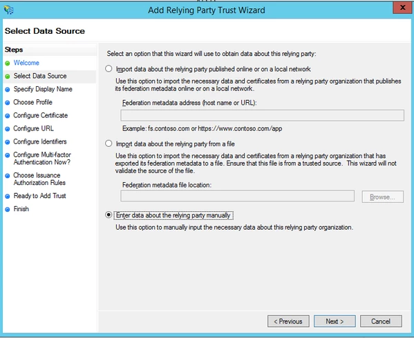
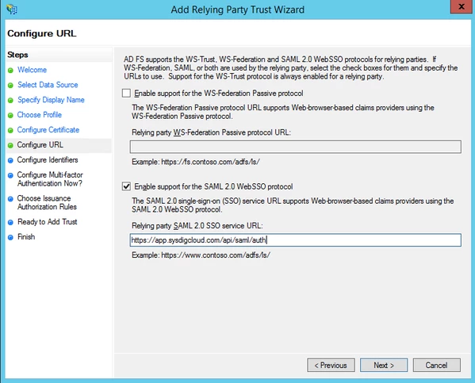
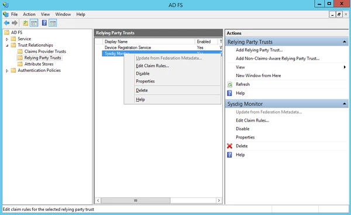

ADFS (SAML)
Review SAML (SaaS) before you begin.
These instructions assume you already have a working, Internet-accessible ADFS server. Interoperability testing has been performed specifically with ADFS on Windows Server 2012 R2.
Follow the instructions below to configure ADFS with the ADFS Management tool in the Windows Server Manager.
For Service-Provider-Initiated Login Flow
Right-click to Service > Edit Federation Service Properties. Note the hostname in the Federation Service Identifier, as this will be used in the metadata URL that you paste in the Metadata entry on the SAML Configuration page in the Sysdig Authentication Settings. Specifically, the metadata URL will be of the format
https://HOSTNAME/FederationMetadata/2007-06/FederationMetadata.xml. Also, so that the Sysdig platform can access this URL directly, this host must resolve in DNS and have a valid (not self-signed) SSL/TLS certificate.

Add a Relying Party Trust configuration for the Sysdig application
Right-click to Relying Party Trusts > Add Relying Party Trust and click Start to begin the wizard.

In the Select Data Source step, click the button to Enter data about the relying party manually, then click Next
 Enter a Display name of your choosing (e.g. "Sysdig Monitor" or "Sysdig Secure"), then click Next

Click Next to accept the default option to use AD FS profile

Click Next to skip the selection of an optional token encryption certificate (Sysdig does not support this option)

Check the box to Enable support for the SAML 2.0 Web SSO protocol, then enter one of the following values for Relying party SAML 2.0 SSO service URL:
If configuring Sysdig Monitor, enter:
https://app.sysdigcloud.com/api/saml/authIf configuring Sysdig Secure, enter:
https://secure.sysdig.com/api/saml/secureAuthThen click Next.
 For the Relying party trust identifier, enter one of the following values:
If configuring Sysdig Monitor, enter:
https://app.sysdigcloud.comIf configuring Sysdig Secure, enter:
https://secure.sysdig.comThen click Add, then click Next

Click Next to skip configuration of multi-factor authentication
Choose a policy for whether users will be permitted to login to the Sysdig application. The default to Permit all users to access the relying party will typically be acceptable. Click Next.

Review the summary and click Next to complete the configuration of the Relying Party Trust

The next step will involve adding Claim Rules, so you can leave the box checked to Open the Edit Claim Rules dialog and click the Close button to be brought immediately into the Claim Rules editor

Next we'll use Claim Rules to ensure that login data is sent as needed to the Sysdig platform. A user's login to the Sysdig platform is based on an email address, and a default ADFS configuration would not send the email address as required. The following configuration ensures the correct field from Active Directory is delivered in the claim.
If not already in the Claim Rules editor from the previous step, navigate to it by right-clicking on the Relying Party Trust that was just created and selecting Edit Claim Rules
 
Click Add Rule. At the following screen, accept the default rule template to Send LDAP Attributes as Claims and click Next.
Enter a name for the rule, select Active Directory as the Attribute store, then use the pull-down selectors to pick E-Mail Address as both the LDAP Attribute and Outgoing Claim Type, then similarly make pull-down selections for Given Name and Surname. Once these selections are made, click Finish.

Now click Add Rule again, this time selecting the template for Transform an incoming claim

Enter a name for the rule, then use the pull-downs to select an Incoming claim type of E-Mail Address, an Outgoing claim type of Name ID, and an Outgoing name ID format of Email, then click Finish.
(Optional) If you want the user's First Name and Last Name to be included in the records created in the Sysdig platform database when new users successfully login via SAML for the first time, additional Transform rules must also be created. Only the email-based username is strictly required and we already created a rule for this, so this step is optional.
If you wish to do this, click Add Rule and once again select the template for Transform an incoming claim. Enter a name for the rule, then use the pull-down to select an Incoming claim type of Given Name, and for the Outgoing claim type, directly type first name into the field. After clicking Finish, click Add Rule and create a similar rule to transform the Incoming claim type of Surname to the Outgoing claim type of last name.


Having clicked Finish after creating your last rule, you will see all rules now in the editor. You can click Ok, and your ADFS configuration for your Sysdig application is complete. It can be tested once Sysdig Support has completed their side of the configuration using the metadata URL you send in your Support request.

For IdP-Initiated Login Flow (Optional)
(Optional) The steps above represent a Service-Provider-Initiated SAML configuration. If you would prefer an IdP-initiated SAML configuration, this is also possible with ADFS, but requires the additional steps described below.
The Sysdig platform requires a specific setting of RelayState in order to accept IdP-initiated login flows. On the ADFS versions tested, we've found this use of RelayState is disabled by default, and a Microsoft article describes the topic in detail. To enable it, as described in a Microsoft forum thread, on your ADFS host, edit
%systemroot%\ADFS\Microsoft.IdentityServer.Servicehost.exe.configand add<useRelayStateForIdpInitiatedSignOn enabled="true" />to the<microsoft.identityserver.web>section. Once the modification is saved, restart ADFS services for the change to take effect.You will need to retrieve your Sysdig customer number as described in the Find Your Customer Number article.
You will then need to generate an IdP-initiated login URL.
In addition to having the correct settings, it must be properly URL encoded. To ease this configuration, use this ADFS RelayState Generator tool. When launched, enter the values below, then hit the Generate URL button.
For the IDP URL String, enter
https://YOUR_ADFS_SERVER/adfs/ls/idpinitiatedsignon.aspxFor the Relying Party Identifier, enter one of the following values:
If configuring Sysdig Monitor, enter
https://app.sysdigcloud.comIf configuring Sysdig Secure, enter
https://secure.sysdig.com
For the Relay State/Target App, enter
#/&customer=CUSTOMER-ID-NUMBER, substituting theCUSTOMER-ID-NUMBERyou retrieved in the previous step
Note
This Results URL will be used in the metadata URL that you paste in the Metadata entry in the SAML connection settings.
Use the Results URL from the tool to test your IdP-initiated login. Note that per this Microsoft forum thread, it is apparently not possible to configure ADFS to use such a URL when your users select the application from the pull-down menu at
https://YOUR_ADFS_SERVER/adfs/ls/idpinitiatedsignon.aspx. However, you may embed the URL into a custom portal or bookmarks list.Now you can test login using an Active Directory user that has an Email address configured.
Test Metadata (Optional)
To ensure the metadata URL you copy at the end of the IDP configuration procedure is correct, you can test it by directly accessing it via your browser.
When accessing the URL, your browser should immediately download an XML file that begins similarly to the example shown below. No entry of credentials or other security measures should be required to successfully download it. If this is not the case, revisit the IDP configuration steps.
|